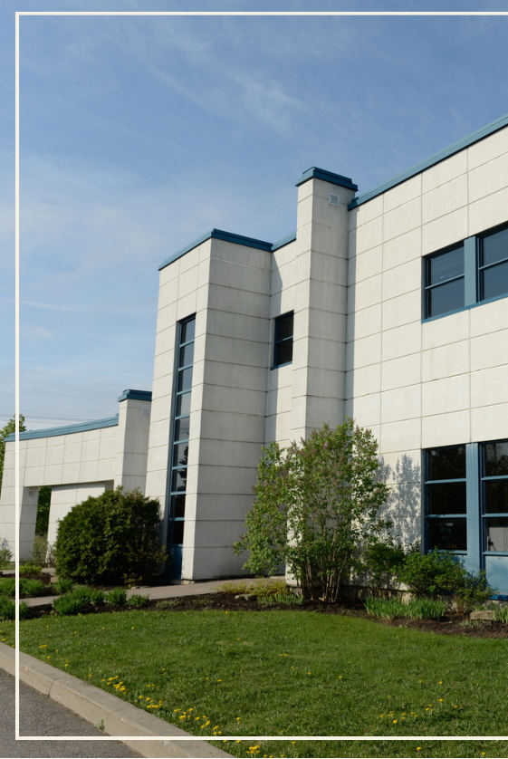

À propos de Tricentris

Tricentris, la coop est une coopérative de solidarité issue du regroupement, à la fin des années 1990, de 44 municipalités ayant décidé de prendre en main la gestion de leurs matières résiduelles. Depuis maintenant près de 30 ans, Tricentris accomplit avec fierté et détermination sa mission en socialisant les bénéfices provenant de la gestion du tri des matières recyclables. L’entreprise contribue ainsi aux aspects environnementaux, sociaux et économiques de l’évolution régionale.
En 2024, Tricentris amorce un grand repositionnement stratégique et élargit son rôle bien au-delà de la récupération pour englober la pratique des 3RVE. La coopérative, qui offre aujourd’hui des services qui favorisent des communautés durables, se distingue par son engagement envers le développement durable et s’impose comme un acteur clé de l’économie circulaire et sociale. Avec son équipe engagée et des valeurs telles que l’innovation, la bienveillance et la coopération, Tricentris continue de développer des solutions concrètes et d’inspirer un changement positif au bénéfice des générations présentes et futures.
Notre vision
Ensemble, inspirer des changements durables pour un monde meilleur.
Notre mission
Offrir des services au bénéfice de nos membres en agissant au quotidien pour favoriser des communautés durables.
Nos valeurs
EngagementCoopérationInnovationIntégritéEnvironnementBienveillance